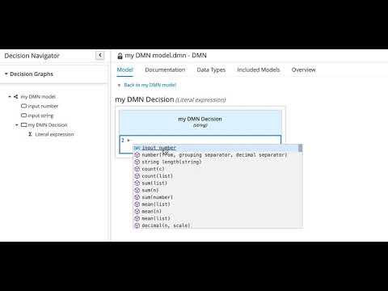

How the new FEEL code-completion works under the hoods
Context-aware code-completion is one of the most important features an IDE can provide to speed-up coding, reduce typos and avoid other common mistakes. Kogito Tooling 0.9.0 release will bring enhanced code-completion for Literal FEEL expressions:

Look how it helps me realize that I need to use the "string(from)" function if I want to concatenate something to my string. Let’s check these two examples of FEEL expressions:
"2" + 1
The FEEL expression above is evaluated to 3.
"2" + string(1)
While the FEEL expression above is evaluated to "21".
Interesting, isn’t it? 🤓
With some naive enhancements in the FEEL code-completion, users already can avoid the mistake above and concatenate the string as they expect. But now you’re probably wondering how does the magic work, right? It relies on a combination of two elements that power this context-aware FEEL code-completion:
- ANTLR4 (ANother Tool for Language Recognition v4) – generates the parser based on FEEL grammar
- antlr4-c3 (ANTLR4 Code Completion Core) – provides code-completion candidates based on ANTLR4 parsed trees (as the image below shows)
{kind=link}
With the combination of these tools and a naive implementation, the Literal Boxed expression editor already provides helpful suggestions. In the next Kogito Tooling release, suggestions will be based only on the FEEL functions’ return type and the context’s inferred type.
There’s still room for enhancements in this initial implementation, like considering parameters and other information that those two powerful tools are already providing to us. This feature has a high level of isolation from the rest of the code base, and it’s an excellent starting point for new contributors! 🚀
If you’re wondering about contributing to one of the Kogito Tooling projects :-) ping me on Zulip (kie.zulipchat.com) or in one of the follow-up JIRAs related to this topic, and I will be glad to help! :-)